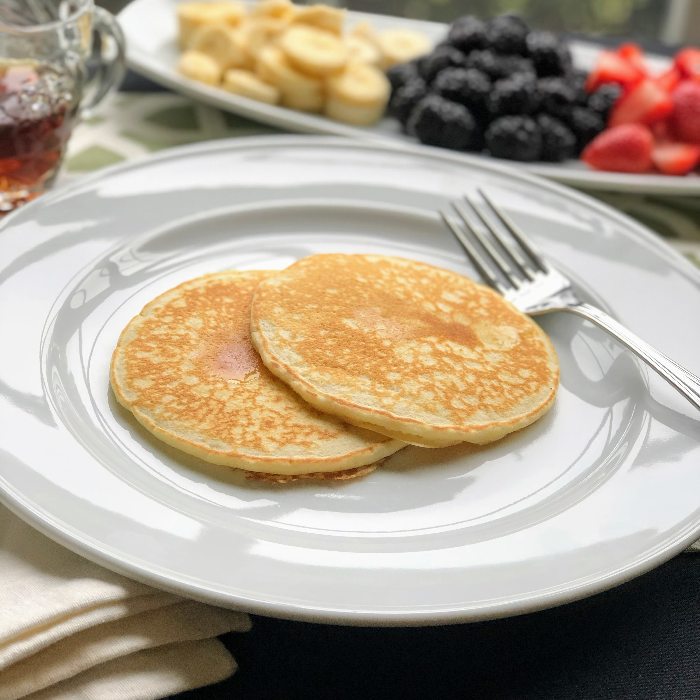

Pancakes

Description
A pancake is a thin, flat, circular piece of cooked batter made from milk, flour, and eggs.
Pancakes are often rolled up or folded and eaten hot with a sweet or savoury filling inside.
In America, pancakes are usually eaten for breakfast, with butter and maple syrup.
Ingredients
- 1½ cups all-purpose flour.
- 1¼ cups milk.
- 1 egg.
- 3 tablespoons butter, melted.
- 1 tablespoon white sugar.
- 2 teaspoons baking powder.
- 1 teaspoon salt.
Steps
- Mix flour, milk, egg, butter, sugar, baking powder, and salt together.
- Heat a lightly oiled griddle over low heat. Scoop 1/4 cup batter onto the griddle
and cook until top and edges are dry, 3 to 4 minutes. Flip and cook until lightly
browned on the other side, 2 to 3 minutes. Repeat with remaining batter.